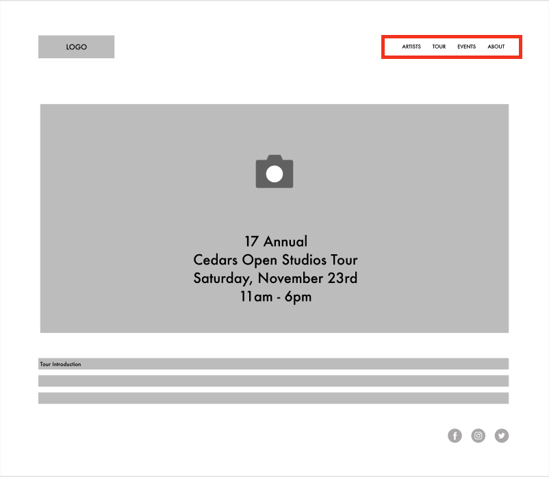

Cedars Open Studios
Streamlining web experience for a nonprofit art tour
Cedars Open Studios, Inc. has produced an art tour hosted in the Cedars neighborhood of Dallas for the last 17 years. This free event draws thousands of visitors to explore the neighborhood studios, see live demos, meet and support the artists of the Cedars.
Project Overview
| Client | Cedars Open Studios, Inc. is dedicated to supporting neighborhood artists, their initiatives, and promoting the vibrant arts culture of the Cedars community |
| Role | Volunteer - UX Designer, UX Researcher over the span of 2 years |
| Contributions | Design voice, site map, user flow, wireframes, usability testing |
| Tools | Squarespace, Figma |
Challenges
Streamlining web experience for a nonprofit art tour.
The Cedars Open Studios website was being hosted on Wordpress which was confusing for board members to update. Additionally, the format felt better suited towards a blog than a non-profit tour landing page so it was confusing for the general public.
Redesigning the web experience for the non-profit tour page in 2020 also meant creating a more interactive map page since, due to COVID-19, the artists were required to set up their installations outside and the tour was better navigated via guest’s own cars rather than taking public transit typically available during the tour.
The last challenge was designing a virtual tour page since some guests were high-risk and simply would not feel comfortable touring in-person. Adding a virtual tour concept with interviews and videos would help guests feel welcome to explore and learn about the Cedar’s artists.
Goals
- Conduct research to understand target users' goals and needs.
- Increase website engagement with target audiences.
Success
Success metrics are hard to calculate in this instance because we don’t have access to the traffic received on the old site.
Step one: Research
Meet Jennifer
Age: 35 - 40
Role: President of Cedars Open Studios
Frustrations
- works in fashion so having an aesthetically pleasing site design is very important to her
- does not find the current host of the website easy to navigate or update
- when information is incorrect, she needs to ask someone else to update it
Goals
- having excellent turnout for the event
- ensuring artists are able to be visited easily
- helping guests find what artists they want to see
Motivations
- caring for the community
- allowing artists to gain the spotlight
- building a good reputation with sponsors

Meet Volta
Age: 25 - 30
Role: Artist
Frustrations
- old site doesn't highlight her work
- map is there but it's hard for guests to learn more about an artist
- site's organization doesn't make sense
Goals
- having excellent turnout at her booth
- promoting events easily
- increasing brand awareness and marketing
Motivations
- meeting the community
- gaining revenue during the event
- meeting other artists and network
Step two: Make

See my proposed layout in the following diagrams.
This layout presents an easily navigable header bar with a clean and simple layout for the home page, which focuses on tour dates and other necessary information for users.
The header invites a user to learn more about the tour with direct labeling.
The old layout used a template based on a blog format.
Because of this, it would often direct users to click on “Recent Posts” which wasn’t clearly relevant to what the user needs.
The home page appeared cluttered.
Note: As the old site has been permanently taken down, screenshots are unfortunately not available.
The old layout only provided a list of artists participating in the tour. The new layout allows for a highlight on each artist, so users can learn more about them and become more interested in finding the tour stops associated with artists they found online.

In addition to navigation and layout changes, the redesign included a switch to Squarespace, allowing members of the board to collaborate on the site and make small edits themselves. The website had historically been managed on Wordpress, and board members would have to request changes from a single volunteer maintainer, with updates depending significantly on his bandwidth.
Step three: Try
This year with the global pandemic, Cedars Open Studios wanted to find new ways for the public to connect with artists, especially for individuals who may be high-risk. We created a virtual tour concept with individual artist pages featuring interviews and studio showings as videos. I created the template for these pages, embedded the video content, and often wrote copy as-needed to create interesting video descriptions.
I set up two templates and solicited feedback from board members on which format felt more engaging for the virtual page.
The top version has videos embedded directly on the page to allow easy transitions between videos. The layout feels similar to YouTube and is intended to foster familiarity.
The bottom version has thumbnails which direct you to the artist page where the video is embedded at the top of the page, giving users a more in-depth look into each individual artist. This format feels familiar to layouts elsewhere on the Cedars Open Studios site.
I conducted a small study with board members and available artists (totaling seven people), and the response was overwhelmingly in favor of the bottom version. Participants felt it was more engaging and also noted that it looked better on mobile.
After the layout was approved, I added short descriptions to each artist listing, making more information accessible to end users and allowing them to make more informed clicks on which artists were more interesting to them. To keep users engaged, each artist's page was updated to include the catalogue of artists at the bottom, prompting users to explore further.
See Live Page
https://www.cedarsopenstudios.orgRetrospective
This was my first website redesign before I truly understood what it meant to be a UX designer. While I do love how the website turned out with respect to simplicity, functionality, and navigability, there is certainly potential to experiment with design choices that make the website more fun, engaging, and different. I'm still building my own personal style when it comes to UX design, so for future projects, I hope to really acquire more understanding on how to execute a design with my personal tastes demonstrated. Overall, it was a pleasure to work on this website, be surrounded by the creations of local artists, and give back to this Dallas community.